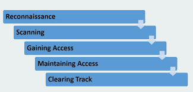
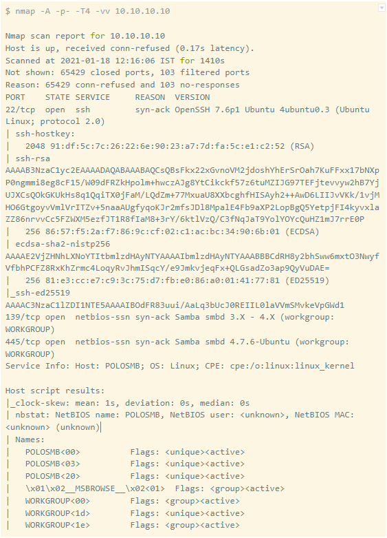
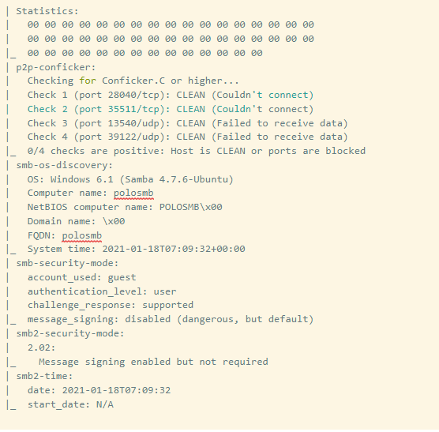
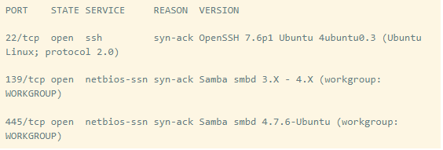
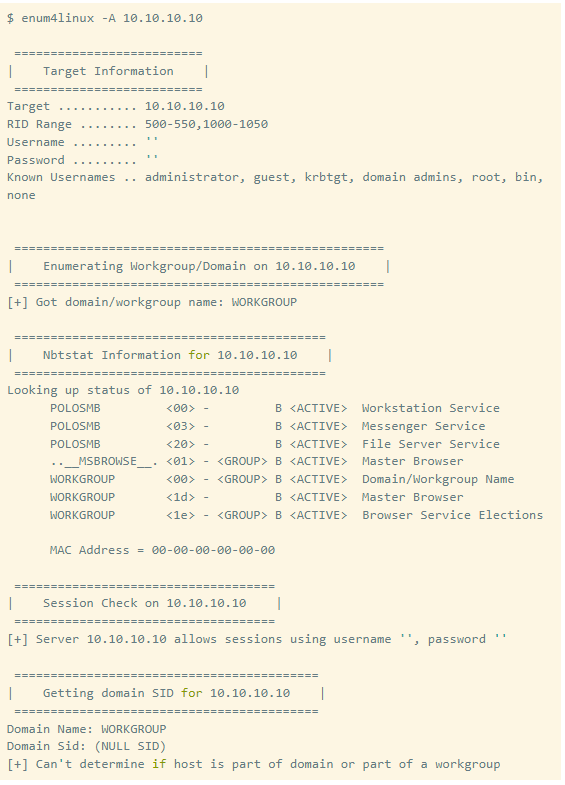
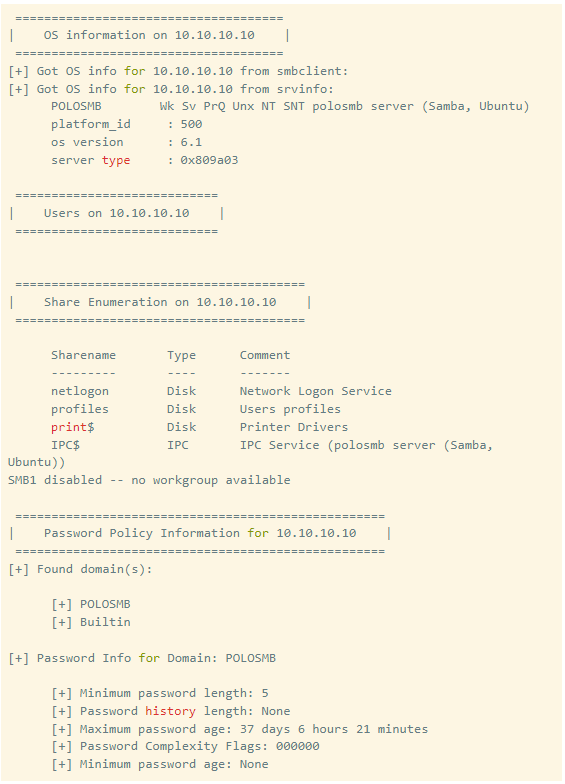
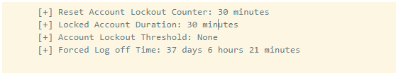
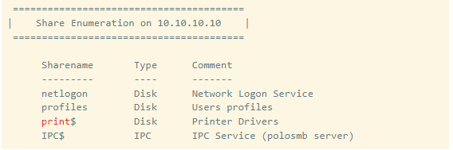
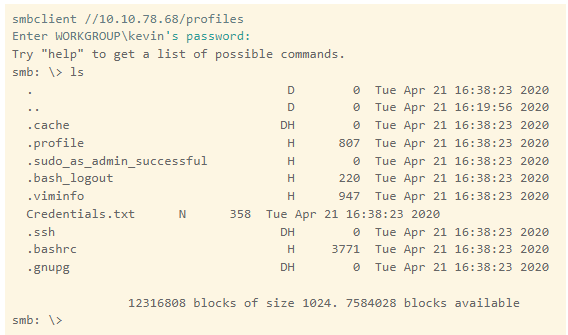

Note for Readers
Greeting to all the lovely souls who are reading this article. Maybe you are a noob(yep, this is what we call a newbie) an intermediate, or an expert who opened this article to quench their thirst for Cyber Security. Some of you might have already known how important an enumeration is? At the same time for others, it is either a new word or they are already with problems in understanding the topic. Don’t worry, I’ll try my best to compile creativity and knowledge and provide you clear explanations with examples. Just hold tight for a Rollercoaster Ride!!
Various Steps in Hacking
When we talk about hacking a thing, where this
“thing” could range from a simple NASA Challenge
website to NASA servers, operating in their headquarters
(don’t tell me you already hacked both using HTML).
A set of phases have been framed by the professional of the
cybersecurity field.

Namely,
- Reconnaissance: Getting to know about the target. It’s IP, software, network, etc.
- Scanning: Using IP we try to identify live hosts, their open ports, and the services running on these ports.
- Gaining Access: To gain access to the target, malicious codes(exploits) are used to exploit the vulnerability found in services(if any).
- Maintaining Access: After gaining access, we try for privilege escalation(to act as the owner of the target) and create a backdoor(mostly a netcat or ssh connection using exploits) so that we can access the target in the future.
- Clearing Track.: Whatever you do, the target machine is logged by the log files, so to avoid our detection by SOC teams one should not fail to clear the logs before leaving.
- Gathering Information(Reconnaissance and Scanning),
- Exploiting the target and finally clearing the tracks.
Enumeration is the key
As I have already mentioned how important the enumeration process is, let’s try to understand it with an analogy. Think of yourself, you are a noob and you want to hack into your friend's system(maybe the one you got from your university). By the grace of god, you all are connected by the university Wi-Fi means you can easily ping each other and are located on the subnet. Sounds exciting? Now you can ping the target that’s where you have options:
- Use all the (almost uncountable) exploits existing in the universe thinking one day you’ll be fortunate enough to be alive to look at that one correct exploit work and give access to all the goofy data you are looking for.
- Take the path to enumerate various ports to list down services(FTP, SMB, SMTP, etc) running on the victim system. Try gathering exploits for these services only which saves more time(I mean it). Even you can go for OS fingerprinting to know more about the base Operating System(Black sheep like me).
Enumerating Services Example
Enough of theory, let’s see an example to understand
the whole process. To make you understand, I’ll replicate
the SMB enumeration in the Network Services room at TryHackMe.
Let’s assume we only have the IP of our target and we are on the same
network(i.e. I can ping the machine/ connect to it).
IP of target : 10.10.10.10 (Imaginary)


So this was our scanning phase where we tried to know about the open ports, services running on those ports,
and the OS fingerprint.
Now, let’s get the important parts from above
Ports and Services

So now we know that two services namely SSH and SMB are running on the target. This will help us to pick
exploits meant only for these vulnerabilities. Let’s enumerate SMB to gain more insights. We’ll be using a CLI tool
named Enum4Linux to enumerate SMB thereby, extracting all the possible information like shares, users, etc.
IP of target : 10.10.10.10 (Imaginary)



Key Findings:

So we found that “profiles” are shared in SMB. Let’s try to connect to it with a tool called “smbclient”, using the misconfiguration of Anonymous Login.

Woohoo!! We got the files of credentials. Now we can do ssh and connect to the machine, create the backdoor and also clear the tracks.
Ending note
Maybe you found this a bit daunt or maybe you thought it’s all setup praddy. We don’t find these in real life but it does take place in reality. Many organizations are hit by cyber attacks due to outdated services running on the system. In this article, we learned how to enumerate(know more) about services and to save time by choosing wisely their respective exploits. For various services, we have various enumeration tools. I recommend learning about them. Share your experience in the comment section. Till then keep hacking and securing :) Signing off!!
Resources
TryHackMe Room